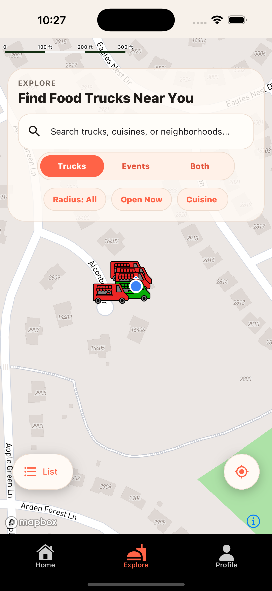
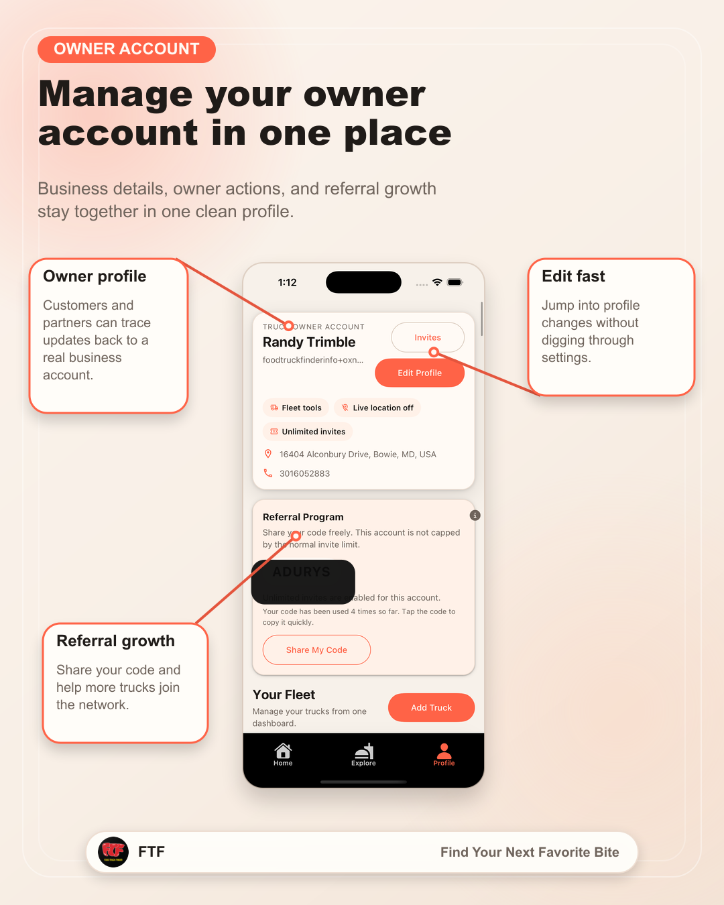
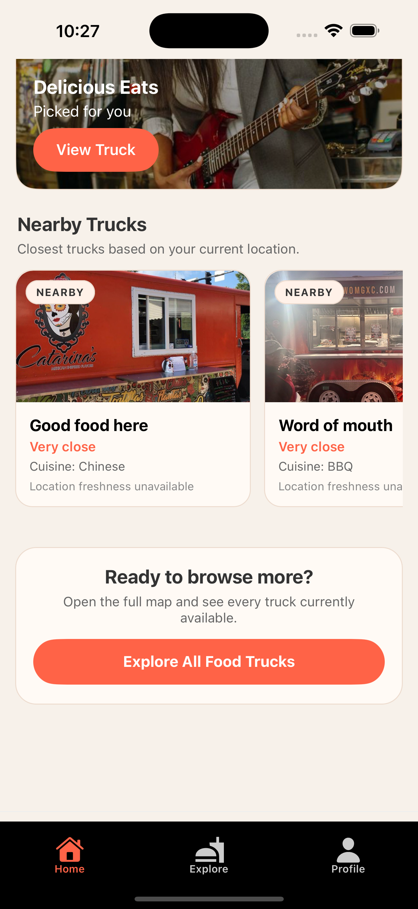
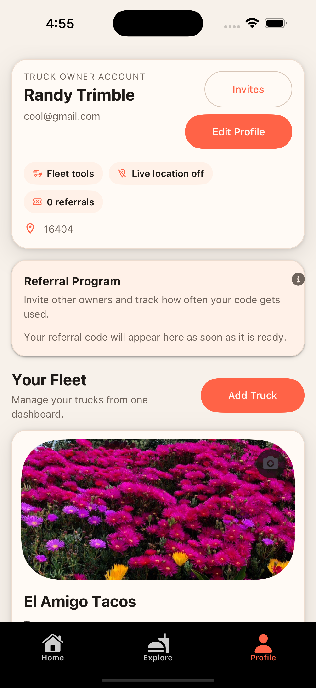
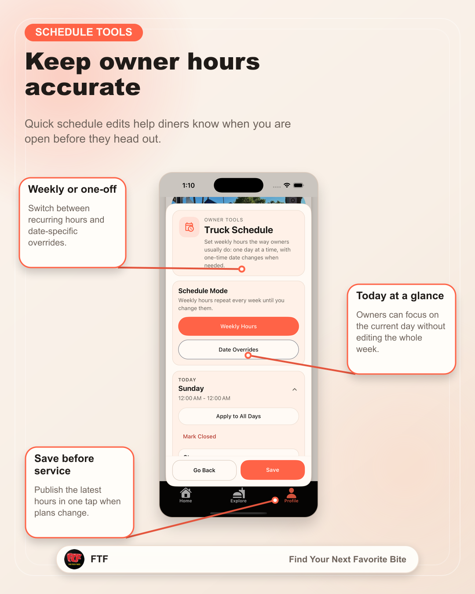
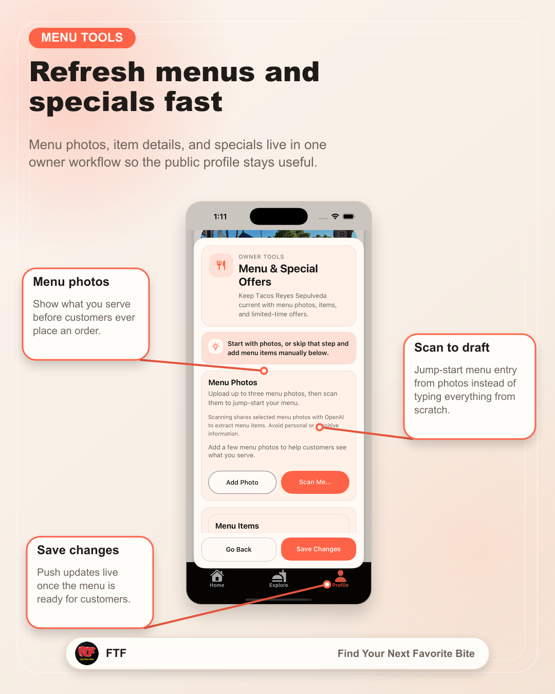
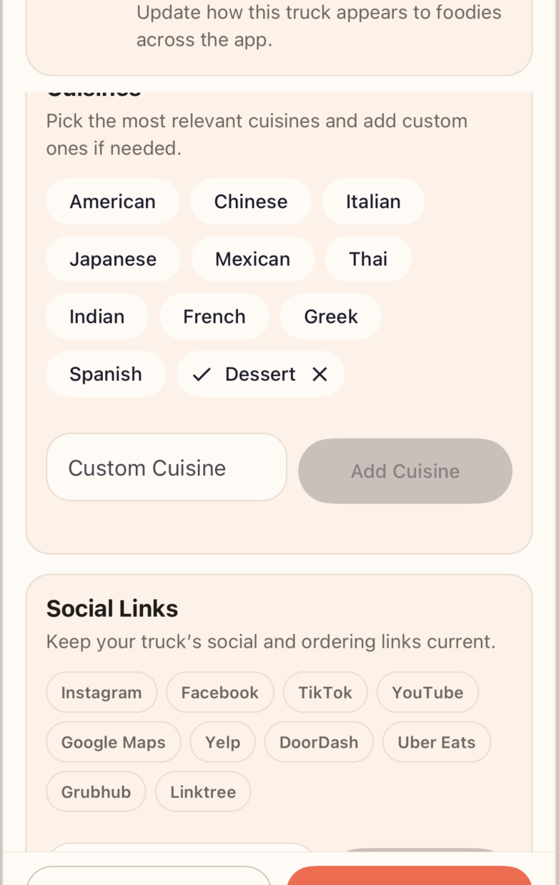
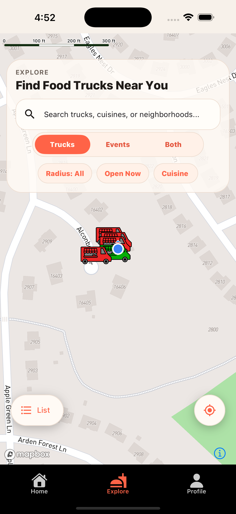
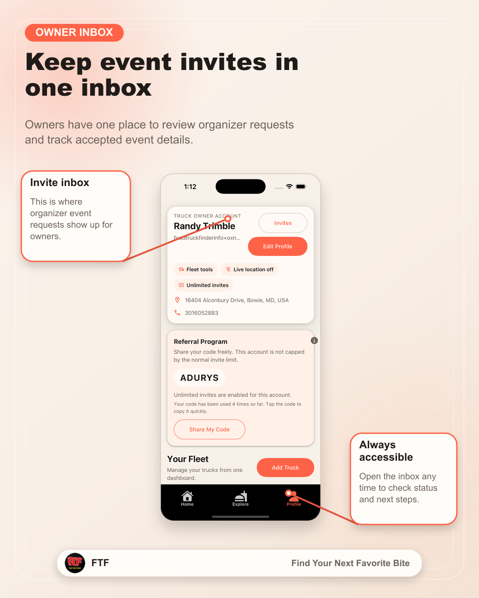
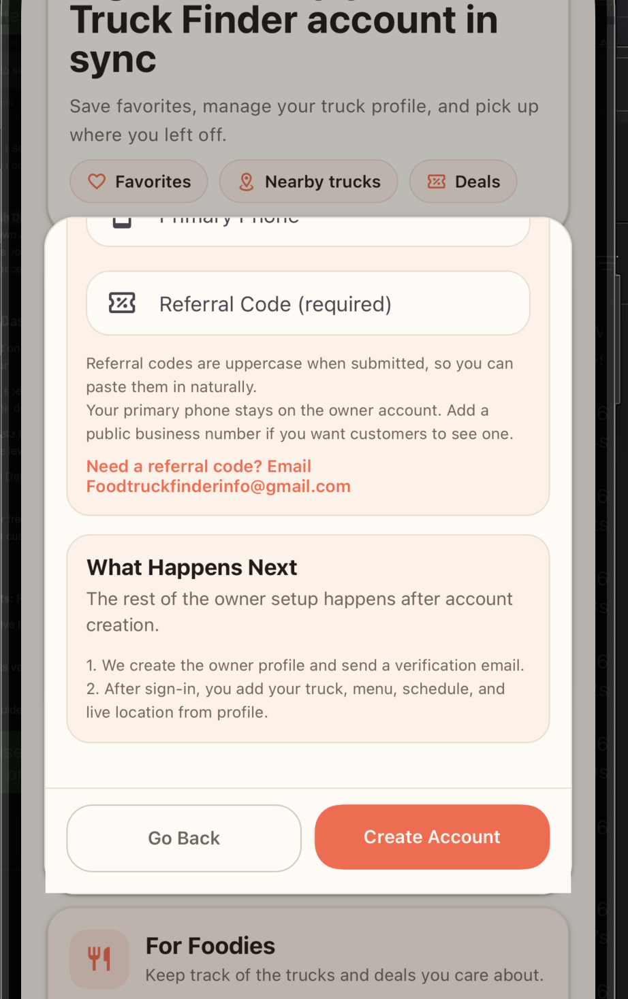

Foodies
Find something good before your lunch break is gone.
Stop bouncing between social posts, maps, and old menus. Use one place to see what is nearby, what looks good, and where to go next.
See the foodie walkthroughBuilt to help food truck owners get found, with tools for foodies and organizers
Food Truck Finder gives owners one place to share live location, schedule, menu, and specials, while foodies browse nearby trucks and organizers build better vendor lineups.
Owner support
Need onboarding help or a referral code? Email us and we will help get your truck profile live faster.

Foodies
Stop bouncing between social posts, maps, and old menus. Use one place to see what is nearby, what looks good, and where to go next.
See the foodie walkthroughOwners
When your location, hours, or menu are buried in stories and comments, customers move on. Give them one current place to check before they choose another truck.
See the owner walkthroughOrganizers
Discover trucks, evaluate fit, and support a smoother path from vendor research to event coordination.
See the organizer walkthroughSee It In Action
The demo below walks through discovery for foodies, live updates for owners, and the planning flow for organizers so the product value is clear in under a minute.
Video Slot Ready
All of the screenshots selected for the site live in
assets/media/ and are organized by audience.
Foodies
The foodie side of the app is about removing friction. The questions are simple: What is near me? Are they open? What do they serve? Is it worth the trip?


Food Truck Owners
If customers cannot quickly see where you are, when you are serving, and what you are selling, you lose the visit before the order starts. This side of the app is built to make the truck easier to find, easier to trust, and easier to choose.
If you need onboarding help or an owner referral code, email Foodtruckfinderinfo@gmail.com.
If you want the fastest path, send a note with your truck name and say you want owner setup help.
Email for Owner Setup



Event Organizers
Organizers need a cleaner path from discovery to outreach. This section is designed to explain that value even when you are still expanding event-specific visuals.



Built for real usage
Each audience should instantly understand why the app matters to them, not just what screens it has.
Every screenshot on the site now has a home in the media library and a job to do on the page.
The page explains how people actually use the app instead of forcing visitors to infer it from UI alone.
Privacy policy, account deletion, download links, and support contacts remain visible and easy to access.
FAQ
No. The platform is positioned for foodies, owners, and event organizers, each with a different reason to use it.
Yes. That is the core owner workflow the site now shows most clearly.
The owner flow is meant to make stop and schedule changes easier to keep current so customers are not guessing.
Discovery first, owner updates second, organizer coordination third, then a direct setup or download CTA.
They live under assets/media/ and are grouped by audience for easy reuse.
They can email Foodtruckfinderinfo@gmail.com for onboarding help or referral code support.
The site keeps dedicated links for the privacy policy and account deletion instructions in the footer.